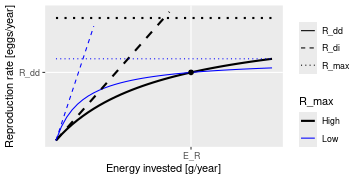

Set Beverton-Holt reproduction without changing the steady state
Source:R/setBevertonHolt.R
setBevertonHolt.Rd![[Experimental]](figures/lifecycle-experimental.svg) Takes a MizerParams object
Takes a MizerParams object params with arbitrary density dependence in
reproduction and
returns a MizerParams object with Beverton-Holt density-dependence in such a
way that the energy invested into reproduction by the mature individuals
leads to the reproduction rate that is required to maintain the given egg
abundance. Hence if you have tuned your params object to describe a
particular steady state, then setting the Beverton-Holt density dependence
with this function will leave you with the exact same steady state. By
specifying one of the parameters erepro, R_max or reproduction_level
you pick the desired reproduction curve. More details of these parameters are
provided below.
Arguments
- params
A MizerParams object
- R_factor
![[Deprecated]](figures/lifecycle-deprecated.svg) Use
Use
reproduction_level = 1 / R_factorinstead.- erepro
Reproductive efficiency for each species. See details.
- R_max
Maximum reproduction rate. See details.
- reproduction_level
Sets
R_maxso that the reproduction rate at the initial state isR_max * reproduction_level.
Details
With Beverton-Holt density dependence the relation between the energy
invested into reproduction and the number of eggs hatched is determined
by two parameters: the reproductive efficiency erepro and the maximum
reproduction rate R_max.
If no maximum is imposed on the reproduction rate
(\(R_{max} = \infty\)) then the resulting density-independent
reproduction rate \(R_{di}\) is proportional
to the total rate \(E_R\) at which energy is invested into reproduction,
$$R_{di} = \frac{\rm{erepro}}{2 w_{min}} E_R,$$
where the proportionality factor is given by the reproductive efficiency
erepro divided by the egg size w_min to convert energy to egg number and
divided by 2 to account for the two sexes.
Imposing a finite maximum reproduction rate \(R_{max}\) leads to a non-linear relationship between energy invested and eggs hatched. This density-dependent reproduction rate \(R_{dd}\) is given as $$R_{dd} = R_{di} \frac{R_{max}}{R_{di} + R_{max}}.$$
(All quantities in the above equations are species-specific but we dropped the species index for simplicity.)
The following plot illustrates the Beverton-Holt density dependence in the reproduction rate for two different choices of parameters. 
This plot shows that a given energy \(E_R\) invested into reproduction can
lead to the same reproduction rate \(R_{dd}\) with different choices
of the parameters R_max and erepro. R_max determines the asymptote of
the curve and erepro its initial slope. A higher R_max coupled with a
lower erepro (black curves) can give the same value as a lower R_max
coupled with a higher erepro (blue curves).
For the given initial state in the MizerParams object params one can
calculate the energy \(E_R\) that is invested into reproduction by the
mature individuals and the reproduction rate \(R_{dd}\) that is
required to keep the egg abundance constant. These two values determine the
location of the black dot in the above graph. You then only need one
parameter to select one curve from the family of Beverton-Holt curves going
through that point. This parameter can be erepro or R_max. Instead of
R_max you can alternatively specify the reproduction_level which is the
ratio between the density-dependent reproduction rate \(R_{dd}\) and
the maximal reproduction rate \(R_{max}\).
If you do not provide a value for any of the reproduction parameter
arguments, then erepro will be set to the value it has in the current
species parameter data frame. If you do provide one of the reproduction
parameters, this can be either a vector with one value for each
species, or a named vector where the names determine which species are
affected, or a single unnamed value that is then used for all species. Any
species for which the given value is NA will remain unaffected.
The values for R_max must be larger than \(R_{dd}\) and can range
up to Inf. If a smaller value is requested a warning is issued and the
value is increased to the value required for a reproduction level of 0.99.
The values for the reproduction_level must be positive and
less than 1. The values for erepro must be large enough to allow the
required reproduction rate. If a smaller value is requested a warning is
issued and the value is increased to the smallest possible value. The values
for erepro should also be smaller than 1 to be physiologically sensible,
but this is not enforced by the function.
As can be seen in the graph above, choosing a lower value for R_max or a
higher value for erepro means that near the steady state the reproduction
will be less sensitive to a change in the energy invested into reproduction
and hence less sensitive to changes in the spawning stock biomass or its
energy income. As a result the species will also be less sensitive to
fishing, leading to a higher F_MSY.
Examples
params <- NS_params
species_params(params)$erepro
#> [1] 1 1 1 1 1 1 1 1 1 1 1 1
# Attempting to set the same erepro for all species
params <- setBevertonHolt(params, erepro = 0.1)
#> Warning: For the following species `erepro` has been increased to the smallest possible value: erepro[Gurnard] = 0.558; erepro[Plaice] = 0.921
t(species_params(params)[, c("erepro", "R_max")])
#> Sprat Sandeel N.pout Herring Dab
#> erepro 1.000000e-01 1.000000e-01 1.000000e-01 1.000000e-01 1.000000e-01
#> R_max 8.071481e+11 4.112049e+11 3.472063e+13 1.197577e+12 1.167176e+10
#> Whiting Sole Gurnard Plaice Haddock Cod
#> erepro 1.00000e-01 1.000000e-01 0.5582259 0.9212325 1.000000e-01 0.1
#> R_max 6.22081e+11 4.007876e+10 Inf Inf 3.929056e+12 8280106764.0
#> Saithe
#> erepro 1.000000e-01
#> R_max 1.145835e+11
# Setting erepro for some species
params <- setBevertonHolt(params, erepro = c("Gurnard" = 0.6, "Plaice" = 0.95))
t(species_params(params)[, c("erepro", "R_max")])
#> Sprat Sandeel N.pout Herring Dab
#> erepro 1.000000e-01 1.000000e-01 1.000000e-01 1.000000e-01 1.000000e-01
#> R_max 8.071481e+11 4.112049e+11 3.472063e+13 1.197577e+12 1.167176e+10
#> Whiting Sole Gurnard Plaice Haddock
#> erepro 1.00000e-01 1.000000e-01 6.000000e-01 9.500000e-01 1.000000e-01
#> R_max 6.22081e+11 4.007876e+10 1.047481e+13 1.082568e+15 3.929056e+12
#> Cod Saithe
#> erepro 0.1 1.000000e-01
#> R_max 8280106764.0 1.145835e+11
# Setting R_max
R_max <- 1e17 * species_params(params)$w_max^-1
params <- setBevertonHolt(NS_params, R_max = R_max)
#> Warning: The following species require an unrealistic value greater than 1 for `erepro`: Plaice
t(species_params(params)[, c("erepro", "R_max")])
#> Sprat Sandeel N.pout Herring Dab
#> erepro 9.274305e-03 1.297184e-04 7.257409e-02 8.045063e-03 4.224791e-03
#> R_max 3.030303e+15 2.777778e+15 1.000000e+15 2.994012e+14 3.086420e+14
#> Whiting Sole Gurnard Plaice Haddock
#> erepro 1.292557e-02 3.571380e-03 5.609587e-01 3.773957e+01 6.020565e-02
#> R_max 8.389262e+13 1.154734e+14 1.497006e+14 3.360215e+13 2.316692e+13
#> Cod Saithe
#> erepro 6.375069e-05 2.433424e-03
#> R_max 2.509328e+12 2.521521e+12
# Setting reproduction_level
params <- setBevertonHolt(params, reproduction_level = 0.3)
#> Warning: The following species require an unrealistic value greater than 1 for `erepro`: Plaice
t(species_params(params)[, c("erepro", "R_max")])
#> Sprat Sandeel N.pout Herring Dab
#> erepro 1.324581e-02 1.852847e-04 1.026645e-01 1.145066e-02 6.035197e-03
#> R_max 2.441029e+12 1.368905e+12 3.256200e+13 3.671952e+12 3.726224e+10
#> Whiting Sole Gurnard Plaice Haddock
#> erepro 1.834577e-02 5.100263e-03 7.974655e-01 1.316046e+00 7.954325e-02
#> R_max 1.807310e+12 1.288262e+11 2.430980e+12 1.092730e+14 5.804489e+12
#> Cod Saithe
#> erepro 9.077210e-05 3.322021e-03
#> R_max 2.758282e+10 3.730633e+11